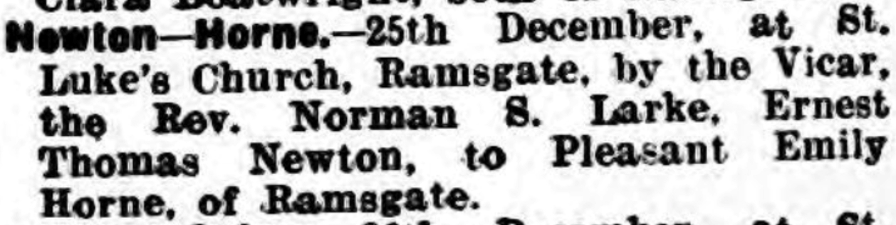
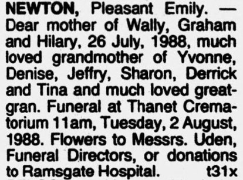
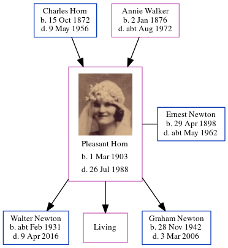

Pleasant Emily Newton (née Horn) 1903 - 1988
[ Home ] | [ Calendar ] | [ Surnames Index ] | [ Census Index ] | [ Family History ]The child of Charles Horn (a fisherman) and Annie Walker, Pleasant Horn, the second cousin twice-removed on the father's side of Nigel Horne, was born in St Lawrence, Thanet, Kent, England on Mar 1, 19031,2,3,4, was baptized there on Mar 29, 1903 and married Ernest Newton (a window cleaner with whom she had 3 children: Walter Ernest, Hilary P and Graham, along with 1 surviving child) at St Luke's Church, Ramsgate, Kent, England on Dec 25, 19295. On Sep 29, 1939, she was living at 22 Hardres Road in Ramsgate1.
She died on Jul 26, 1988 in Thanet, Kent, England3 and was buried in Margate, Kent, England on Aug 2, 1988.
Parents
- Charles was born on Oct 15, 1872
- Annie Elizabeth was born on Jan 2, 1876
Children
- Walter Ernest was born c. Feb 1931
- Graham was born on Nov 28, 1942
Citations
- 1939 Register - Findmypast (was the wife of the head of the household)
- England & Wales births 1837-2006 - Findmypast
- England & Wales deaths 1837-2007 - Findmypast
- Kent, Canterbury Archdeaconry Baptisms - Findmypast
- England & Wales Marriages 1837-2005 - Findmypast
Media
Thanet Advertiser 28 Dec 1929

Pleasant Emily Horne
Isle of Thanet Gazette - 29 Jul 1988

Kent, Canterbury Archdeaconry baptisms - GBPRS/CANT/B/96406495
England & Wales births 1837-2006 - BMD/B/1903/2/AZ/000302/104
1939 Register - TNA/R39/1766/1766A/015/21
England & Wales deaths 1837-2007 - BMD/D/1988/7/76876567
England & Wales marriages 1837-2005 - BMD/M/1929/4/AZ/000583/078
Family Tree
Generated by ged2site. Last updated on Jun 11, 2024